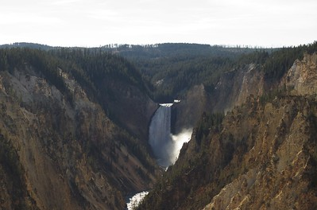
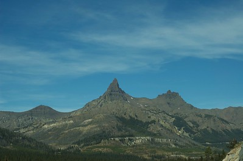
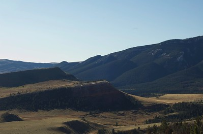
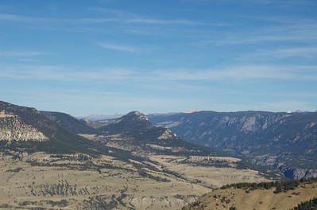
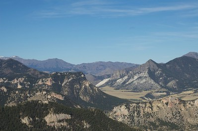
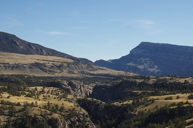
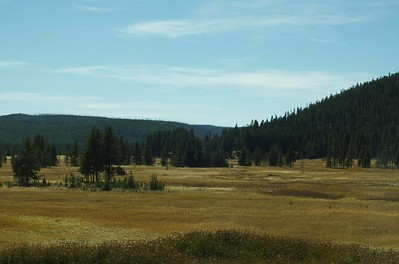
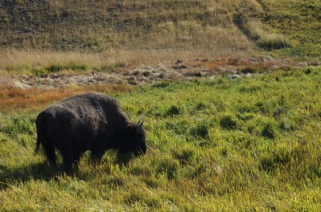
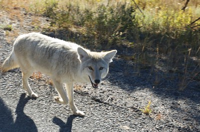
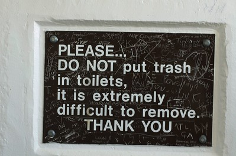

Yellowstone 2008

Our little family had the pleasure of visiting our nation's best national park almost two months ago. My wonderful aunt and uncle were kind enough to host us and take us on a beautiful drive to and through the park. Below, I've finally posted some pictures from that day for your viewing pleasure. If you ever have the chance, I'd highly recommend taking the Chief Joseph Scenic Highway which officially begins a short distance from Cody and goes towards the north eastern entrance of Yellowstone Park. If you don't you'll miss out on one of the best views I've ever beheld. I could have spent a lot more time just enjoying various scenic locations, as well as the company. Although we didn't get to see all the wildlife we hoped for, for my second visit to the park in as many years did not disappoint.









- Prior: Beautiful Fall Colors
- Next: G2 20081225